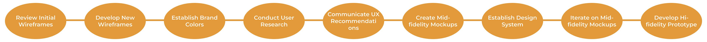

OpenKitchen MVP Mobile App
MVP Mobile App Design for Startup Company “OpenKitchen”

I worked as a UX/UI Designer for a startup company called “OpenKitchen” to help them design the MVP of their mobile application. I worked with the CEO and fellow designer to review initial wireframes, develop mid-fidelity wireframes, conduct user research, develop key findings and recommendations, establish brand colors, create a design system, and ultimately create a hi-fidelity working prototype to hand off to the development team for launch of the application.
The OpenKitchen app is designed to support Host users and Guest users, where guests are able to sign up and search for hosts in their area, book an online reservation time and meal, and show up to receive a homemade meal made by a host who loves to cook. The app also allows Hosts to sign up as a host, create a menu for their kitchen, and set up meal times for guests to reserve.
Process
Initial Wireframes — OpenKitchen had several existing wireframes when I came aboard, which served as our starting point. They included a guest user flow and a host user flow. These later needed to be re-worked so they included more specification and detail, and made more sense for the user flow.
Mid-fidelity Wireframes — I worked with the CEO and fellow designer to re-design the initial wireframes. Once we determined the content for most of the pages, we then planned the layout for each page and mapped out the entire user flow with much more specificity, thinking ahead about the interactions needed for the user to accomplish their goals: general onboarding, host onboarding, main global navigation, the guest user flow, and the host user flow.
Initial Hi-fidelity Mockups — I applied the brand colors discussed to the wireframes and color-coded the guest user flow screens with orange, and the host user flow screens with green.
Final Hi-fidelity Prototype — the working prototype below.